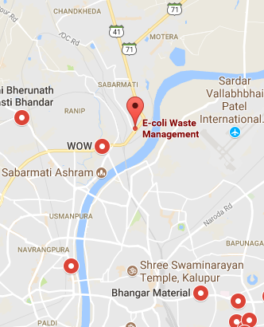

Recycling is good for the environment. Our city has one of the best recycling programs in the world! You can pick up another recycling box at City Hall. Bulk items can also be picked up on your regular garbage collection day.
Get into the habit of recycling, and it will become second nature. Here are some tips that will help you:
Put the following items in a recycling box:
Glass
Paper
Plastic
Aluminum foil (clean)
Cardboard (fold or break into small pieces)
Community Recycling Centers will accept good used clothing, furniture and household items for their on-site stores. Instead of calling for a bulk pickup, take used items to the Community Recycling Centers!
Large items can be picked up by the city garbage collection service. Please contact us directly for a to arrange a pickup time.
Trade Square, 203, Opp. Torrent Power House,
Dharm Nagar II, Sabarmati,
Ahmedabad, Gujarat 380005, India